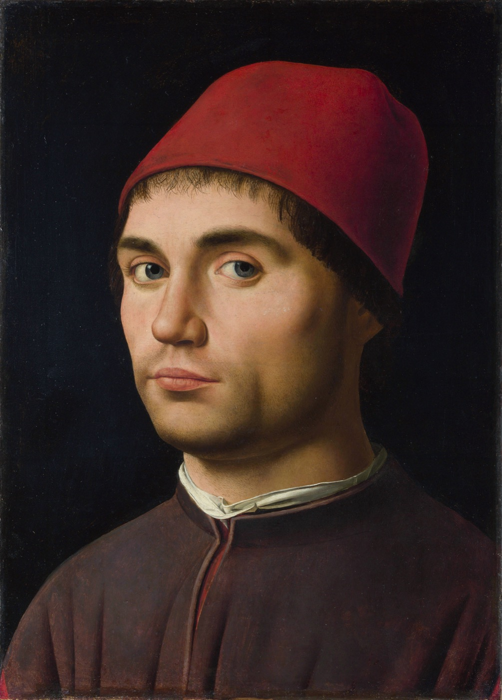
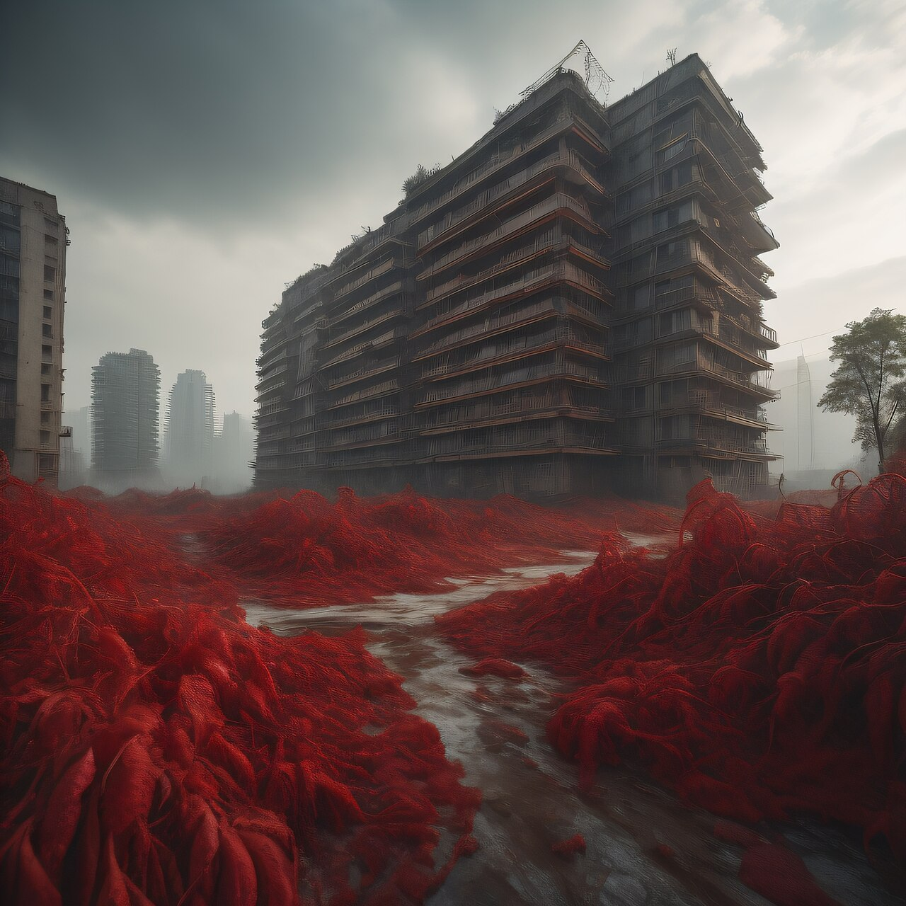
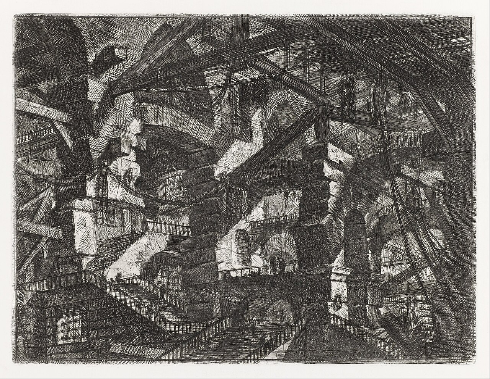
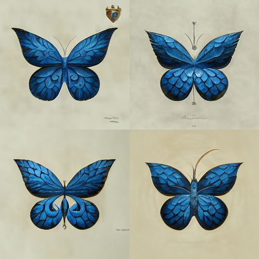
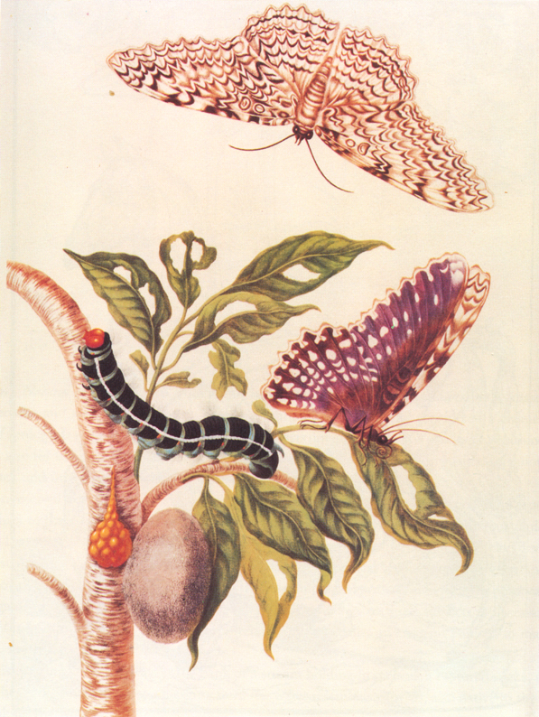

人类作品｜Antonello da Messina，《Portrait of a Man》，约 1475–1476，公共领域。
从“猜一猜”到“做出来”——今天，每个人都能成为游戏创造者。
一共 3 轮。观察细节，凭第一感觉投票。
构图、光影、纹理、逻辑。
每轮每台设备只能投 1 次。
猜错没关系，理由更重要。





它从大量数据中学习规律，再组合出新的内容。
风格、经验与时代共同塑造作品。
观察来源、过程和细节，不能只凭“像不像”。
所以，AI 到底是什么？
人工智能（AI）是让机器表现出原本需要人类智能才能完成的能力：理解、推理、学习、创造与行动。
隔着屏幕，用文字回答提问。
也隔着屏幕，用文字回答提问。
如果提问者很难分辨对面是人还是机器，机器就通过了测试。
在一项任务上很强：识图、下棋、推荐。
能对话、作图、写代码，并连接多种工具。
像人一样跨领域学习、迁移和解决广泛问题的目标。
今天的 AI 已经很强，但“是否达到 AGI”仍有争议。真正关键的是：会提问、会验证、会合作、会创造。
不是先学完所有代码，而是先把想法说清楚，再和 AI 一起做出来。
观察它有哪些规则、反馈和细节。等会儿你们要做得更有创意。
game.html怎样得分？什么时候结束？
点中后，画面和声音怎么回应？
难度是否合适？还想再玩一次吗？
等待本班冠军诞生……
第一版很快，真正的创造发生在不断测试和优化中。
需求定义者；听取大家意见，最终敲定玩法。
把需求变成清晰提示词，和 AI 一起完成游戏。
找 Bug、测规则、记录体验。
测难度、反馈感和可玩性。
向全班介绍创意、玩法和改进。
参与 · 合作 · 角色履职 · 迭代记录
创意 · 完成度 · 展示表达
以小组为单位完成。好作品来自清晰分工、认真倾听和精诚合作。
森林、太空、校园，还是海底？
什么能点？什么不能点？怎样得分？
速度如何变化？一局多长？
连击、道具、Boss、彩蛋？
AI 创造师先提交完整提示词；其他成员检查有没有遗漏和矛盾。
能否开始？计分对吗？结束后能否重玩？
先修影响游戏的问题，再做漂亮和有趣。
一次说清一个问题，修改后立刻再测。
生成 → 试玩 → 发现问题 → 描述问题 → 修改 → 再试玩
规则清楚、运行稳定。
让人愿意继续玩。
有独特主题或机制。
视觉、反馈、细节完整。
今天的目标不是“做得和示例一样”，而是做出属于你们小组的版本。
← / →：切换页面
空格：下一页
F：全屏
N：教师备注
R：清除三轮投票（需确认）